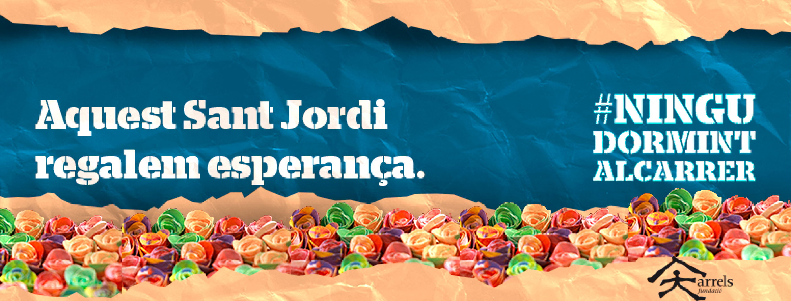
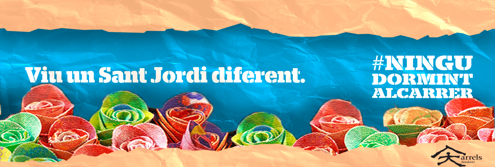
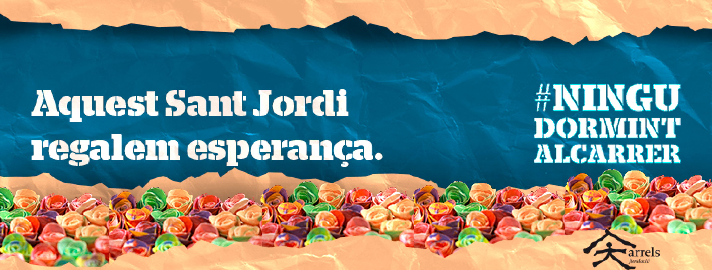
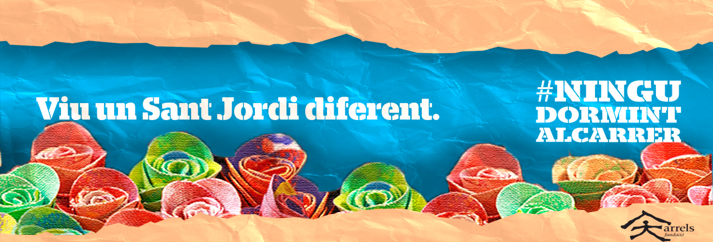

In this project, I had the privilege of working with Arrels Fundació , a nonprofit organization dedicated to finding homes for the homeless .
This project allowed me to apply my graphic design skills in a meaningful way . It reinforced the importance of visual storytelling in creating awareness and support for social impact initiatives . My work with Arrels Fundació not only enhanced their online presence but also contributed to their ongoing efforts to provide homes for the homeless .
The goal was to create impactful and emotionally resonant headers that would effectively communicate the organization's mission and drive engagement .